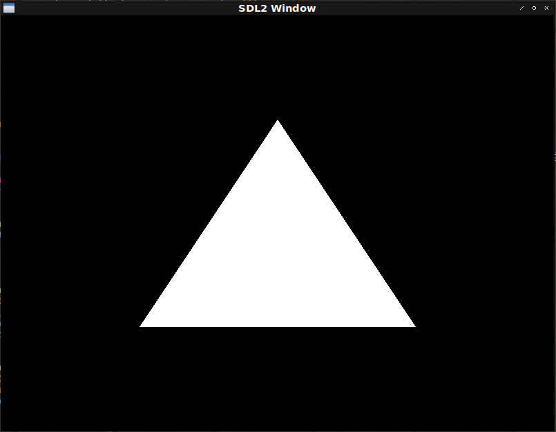

Fight against cl-opengl 5.
Metanotes
対象読者
前章読了済みの方。
Introduction.
前回はシェーダーを抽象化しました。 今回はVertex Arrayを抽象化します。
Vertex array.
OpenGLは頂点（vertex）に関する情報を生の一次元配列で持ちます。
例えば以下のような形です。
(let ((vertices #(; x, y
-0.5 -0.5
0.5 -0.5
0.0 0.5)))
...)これらの配列をまるっとOpenGLに渡すのですが、OpenGLは配列の各要素がx,yの順に並んでいることを知りません。 それは別途教えてあげる必要があります。
またこれら頂点は一種類さえあれば良いというものではありません。 アプリケーションにもよるでしょうが複数の設定が必要となるものです。 そのたびにいちいちOpenGLに設定を教え直すのは手間なので簡単に設定を切り替えるための機能があります。 名をVertex Array Objectと言います。
Workflow
典型的な手順は以下の通り。
- OpenGLにN個のVertex Array作成を依頼。
- ターゲットとなるVertex Arrayを一つ指定。
- 設定を指定。
- 本体処理。
- OpenGLに削除を依頼。
リソースの削除が必要なので今回もWITH系マクロを作ります。
WITH-VERTEX-ARRAY
基本構造はこれまでとまったく同じです。 何も難しい点はありません。
(defmacro with-vertex-array ((&rest bind*) &body body)
`(let ,(mapcar (lambda (bind) `(,(car bind) (gl:gen-vertex-array))) bind*)
(unwind-protect
(progn
,@(mapcan
(lambda (bind)
`((gl:bind-vertex-array ,(car bind)) ,@(cdr bind)))
bind*)
,@body)
(gl:delete-vertex-arrays (list ,@(mapcar #'car bind*))))))LINK-ATTRIBUTES
Lisperとして我慢ならない点が一つあります。 それは頂点情報の定義が変わった時のことです。
例えば頂点情報としてZ軸も扱うように変更するとしましょう。
(let ((vertices #(; x, y, z
-0.5 -0.5 0.0
0.5 -0.5 0.0
0.0 0.5 0.0)))
...)するとそれをOpenGLに教えなくてはならないのです。
Common Lispでは通常宣言的なプログラミングをします。 XXXであると宣言したら後はそれに合わせていい具合になって欲しいのです。 配列の構造（定義）を変えたあとそれをOpenGLに伝えなければならない不便さを例えて言うならテレビのチャンネルを8chに変えるためにはまずテレビ本体のボタンを操作して8chに変えるための信号を受け取れるようにしてしかる後にリモコンで8chを指定しなければならないような不便さです。 この不便さには耐えられません。 テレビ本体を操作せずともリモコンのボタンを押したら画面が切り替わって欲しいのです。 これは贅沢な不満でもなんでもないはずです。
しかしながらOpenGLがそれを要求するのは理解できます。 なにより速度が求められる世界なのですから。
ですがエンドユーザーであるプログラマがそれに従う必要性は皆無です。 言語がそのための機能を提供してくれればいいのです。 そしてCommon Lispはプログラム可能なプログラミング言語です。 早速Common Lispをプログラムし言語機能を拡張しましょう。
VECTOR-CLASS
僕達が今欲しいのは構造体のように抽象化されていながらOpenGLからはただの配列に見えるものです。
Fail way with defstruct.
真っ先に思い浮かぶのはDEFSTRUCTの:TYPEオプションです。
Common Lispで構造体はDEFSTRUCTで定義します。
* (defstruct pos x y) => POSこれでx,yというメンバー変数（Common Lispではスロットと呼ぶ）を持つPOSという構造体ができます。
インスタンスを作るには自動的に作られるMAKE-xxx関数を呼びます。
* (make-pos :x 0 :y 1) => #S(POS :X 0 :Y 1)作られるオブジェクトはもちろんpos型です。
* (type-of (make-pos)) => POSしかしながら:TYPEオプションを指定することで他の型にする事もできます。
* (defstruct (pos (:type vector)) x y) => POS
* (make-pos :x 0 :y 1) => #(0 1)
* (type-of (make-pos)) => VECTOR上記例では型にVECTORを指定しコンストラクタがVECTORを作るようにしています。
もちろん型はVECTORになります。
この機能を用いればプログラマからは構造体のように見えながらOpenGLからは配列に見えるコードを実現できそうです。
しかしタイトルが示すようにこれはうまく行きません。
というのも作られるインスタンスはただのVECTORなのでそれ以上の情報を持たないのです。
構造体名からスロットの情報を取り出すのはどうでしょうか。
これが通常の構造体なら可能なのですが:TYPEオプションを指定するとそれも叶いません。
:TYPEオプションを指定された構造体はもはや構造体ではないのでFIND-CLASSは失敗します。
* (find-class 'pos) => ERRORMOP
構造体の:TYPEオプションがうまく行かなかったのはMOP（Meta-Object-Protocol）の文脈から外れてしまうからです。
10という値があるとします。
その型は整数です。
これをオブジェクト志向的に言い換えると10というインスタンスのクラスは整数であるとなります。
では整数クラスというインスタンスのクラスは何でしょう？
Common LispではこれはBUILT-IN-CLASSになります。
RUBYのファンならMatzが「クラスのクラスはクラス」という構造に感動したというエピソードを聞いたことがあるかもしれません。 Common Lispではこの「クラスのクラス」のことを便宜的にメタクラスと呼び習わします。
そしてメタクラスの実装にはデファクトスタンダード（仕様）が存在します。 それをMOP（Meta Object Protocol）といいます。
VECTOR-CLASS
まずは僕達のメタクラスとなるべきVECTOR-CLASSを定義しましょう。
それはDEFCLASSで定義できる通常のクラスです。
STANDARD-CLASSを継承するのが特徴です。
(defclass vector-class (standard-class) ())次にこれをメタクラスにできるように許可をだします。
(defmethod c2mop:validate-superclass ((c vector-class) (s standard-class)) t)次にコンストラクタの共通インターフェイスであるMAKE-INSTANCEを定義します。
特徴は:AROUNDメソッドを定義しCALL-NEXT-METHODを呼ばないことです。
これによりMAKE-INSTANCE呼び出しはクラスオブジェクトのインスタンスを作ることなく配列を返すようになります。
(defun class-list (class)
"Return class list specified to abstract oder, superclasses are reverse order."
(uiop:while-collecting (acc)
(labels ((rec (c)
(unless (eq 'standard-object (class-name c))
(acc c)
(mapc #'rec (reverse (c2mop:class-direct-superclasses c))))))
(rec class))))
(defun class-initargs (class)
(uiop:while-collecting (acc)
(dolist (c (nreverse (class-list class)))
(dolist (s (c2mop:class-direct-slots c))
(acc (car (c2mop:slot-definition-initargs s)))))))
(defmethod make-instance :around ((c vector-class) &rest args)
(let ((values
(loop :for initarg :in (class-initargs c)
:collect (or (getf args initarg)
(error "~S is required." initarg)))))
(make-array (length values)
:initial-contents values
:element-type 'single-float)))VECTOR-CLASSをメタクラスに持つクラスは以下のように定義します。
(defclass xy ()
((%x :initarg :x :type single-float) (%y :initarg :y :type single-float))
(:metaclass vector-class))このXYクラスオブジェクトを作ろうとすると配列が作られます。
* (make-instance 'xy :x 0.0 :y 1.0) => #(0.0 1.0)VECTOR-CLASSのMAKE-INSTANCEはプライマリメソッドを呼び出していないだけなのでクラスの設計図はLispに残ります。
すなわちFIND-CLASSは成功します。
* (find-class 'xy) => #<VECTOR-CLASS XY>設計図が手に入ればそこからスロット情報を取り出すのは簡単です。
* (c2mop:class-slots (find-class 'xy))
(#<SB-MOP:STANDARD-EFFECTIVE-SLOT-DEFINITION %X>
#<SB-MOP:STANDARD-EFFECTIVE-SLOT-DEFINITION %Y>)Implementation.
ではクラス名とプログラムを受け取りOpenGLに属性情報を伝える関数を定義しましょう。
(defun link-attributes (class program)
(labels ((rec (class-list total-length funs)
(if (endp class-list)
(let ((total (apply #'+ total-length)))
(loop :for f :in funs
:for l :in total-length
:do (funcall f total l offset)
:sum l :into offset))
(let ((slots
(length (c2mop:class-direct-slots (car class-list)))))
(if (zerop slots)
(rec (cdr class-list) total-length funs)
(rec (cdr class-list)
(cons (the (integer 1 4) slots) total-length)
(cons (processer (car class-list)) funs))))))
(processer (class)
(lambda (total-length length offset)
(let* ((location
(gl:get-attrib-location program
(change-case:camel-case
(symbol-name
(class-name class)))))
(slots
(c2mop:class-direct-slots
(c2mop:ensure-finalized class)))
(type
(ecase (c2mop:slot-definition-type (car slots))
(single-float :float)))
(size (cffi:foreign-type-size type)))
(when (minusp location)
(error "Variable ~S is not active in program ~S"
(change-case:camel-case
(symbol-name (class-name class)))
program))
(gl:vertex-attrib-pointer location length type nil ; As
; normalized-p
(* total-length size)
(* offset size))
(gl:enable-vertex-attrib-array location)))))
(rec (class-list (find-class class)) nil nil)))ライブラリchange-caseを用いてキャメルケースに変換している点要注意。
Hello-triangle
これでようやっと最初の三角形描画が可能となります。
(defparameter *triangle*
(concatenate '(array single-float (*))
(make-instance 'xy :x 0.0 :y 0.5)
(make-instance 'xy :x 0.5 :y -0.5)
(make-instance 'xy :x -0.5 :y -0.5)))
(defparameter *vertex-shader*
"#version 330 core
in vec2 xy;
void main () {
gl_Position = vec4(xy, 0.0, 1.0);
}")
(defparameter *fragment-shader*
"#version 330 core
out vec4 outColor;
void main () {
outColor = vec4(1.0, 1.0, 1.0, 1.0);
}")
(defun hello-triangle ()
(sdl2:with-init (:everything)
(sdl2:with-window (win :flags '(:shown :opengl)
:x 100
:y 100
:w 800
:h 600)
(sdl2:with-gl-context (context win)
(with-gl-vector ((vector *triangle*))
(with-buffer ((buf vector))
(with-prog (prog *vertex-shader* *fragment-shader*)
(with-vertex-array ((vao (link-attributes 'xy prog)))
(sdl2:with-event-loop (:method :poll)
(:quit ()
t)
(:idle ()
(with-clear (win (:color-buffer-bit)
:color '(0.0 0.0 0.0 1.0))
(gl:draw-arrays :triangles 0 3))))))))))))